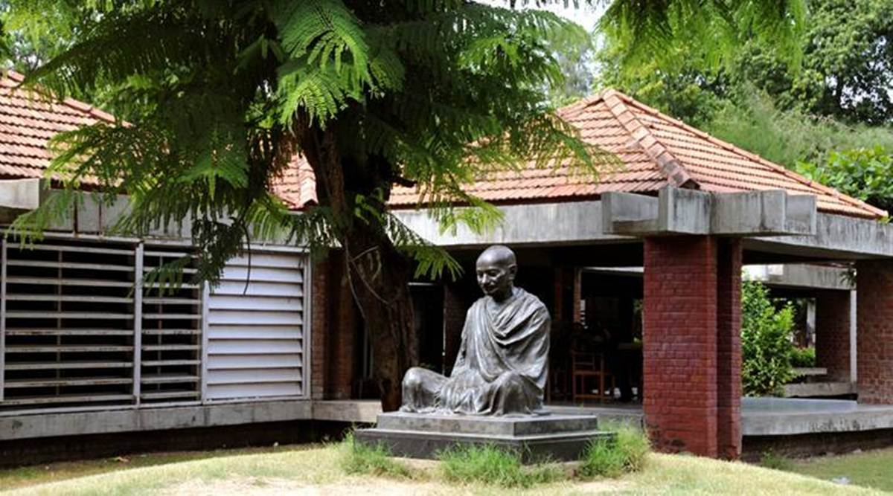

Ahmedabad
Gujarat
About the city Places to visit About food Transportation facility Best time to visit Map
About the city
Ahmedabad Founded in the 15th century, Ahmedabad is the largest city in the state of Gujrat. The city is a vibrant business district and rising centre of education, information technology and scientific industries. Divided in two - the old city and the new city; The city offers different moods right from the hustle-bustle of C.G. Road in the heart of Ahmedabad to the quite retreat of of the Sabarmati Ashram. Ahmedabad enjoys a thriving cultural tradition, being the centre of Gujarati cultural activities and diverse traditions of different ethnic and religious communities. Popular celebrations and observances include Uttarayan - an annual kite-flying day on 14 January and the nine nights of Navratri - celebrated with people performing Garba - the folk dance of Gujarat - at venues across the city.
Places to visit
Sabarmati Riverfront

Sabarmati Riverfront is a waterfront being developed along the banks of Sabarmati river in Ahmedabad, India. Proposed in the 1960s, the construction began in 2005. Since 2012, the waterfront is gradually opened to public as and when facilities are constructed and various facilities are actively under construction. The major objectives of project are environment improvement, social infrastructure and sustainable development.
Kankaria Lake

Kankaria Lake is the second largest lake in Ahmedabad, Gujarat, India. It is located in the south-eastern part of the city, in the Maninagar area. It was completed in 1451 during the reign of Sultan Qutb-ud-Din Ahmad Shah II though its origin is placed in the Chaulukya period sometimes. A lakefront is developed around it, which has many public attractions such as a zoo, toy train, kids city, tethered balloon ride, water rides, water park, food stalls, and entertainment facilities. The lakefront was revamped in 2007–2008. Kankaria Carnival is a week-long festival held here in the last week of December. Many cultural, art, and social activities are organised during the carnival.
Sabarmati Ashram

Sabarmati Ashram (also known as Gandhi Ashram) is located in the Sabarmati suburb of Ahmedabad, Gujarat, adjoining the Ashram Road, on the banks of the River Sabarmati, 4 miles (6.4 km) from the town hall. This was one of the many residences of Mahatma Gandhi who lived at Sabarmati (Gujarat) and Sevagram (Wardha, Maharashtra) when he was not travelling across India or in prison. He lived in Sabarmati or Wardha for a total of twelve years with his wife Kasturba Gandhi and followers, including Vinoba Bhave. The Bhagavad Gita was recited here daily as part of the Ashram schedule.
Adalaj Stepwell

Adalaj Stepwell or Rudabai Stepwell[1] is a stepwell located in the village of Adalaj, close to Gandhinagar city in Gandhinagar district in the Indian state of Gujarat, and considered a fine example of Indian architecture work. It was built in 1498 in the memory of Rana Veer Singh (the Vaghela dynasty of Dandai Des) by his wife, Queen Rudadevi.
Manek Chowk
Manek Chowk is a notable city square in Old Ahmedabad, India. It is surrounded by historical structures. It is a vegetable market in the morning, a bullion market in the noon and the street food market at night. It is most famous, however, for its food stalls that start to emerge around 9:30 in the evening and continue till late night, with various local street snacks. Manek chowk is best known for its Kulfi.
Best time to Visit
Ahmedabad can be visited at any time throughout the year but the Winter season from October to March is the best time to visit Ahmedabad to explore its historical monuments, wonderful museums and gorgeous lakes.
About Food
Not most of the people are aware of the fact that Ahmedabad’s heart lies in its street food. Khakhra, dhokla,kulfi,paani puri,dal vada, maska bun, momos, samosa, stuffed paratha, bhuna ghosht, jalebi phafda
Transportation Facility

By Air
Sardar Vallabhbhai Patel International Airport is an international airport serving the twin cities of Ahmedabad and Gandhinagar in Gujarat, India. The airport is located in Hansol, 9 km north of central Ahmedabad.

By Rail
Ahmedabad Junction railway station (station code: ADI) is the main railway station of Ahmedabad, Gujarat, India. It is also the biggest railway station within Gujarat and also one of the major railway station in India. It is the highest income-generating division in Western Railways. It connects to Mumbai,Chennai,Delhi, Howrah and other major citis of India.

By Road
Ahmedabad city is well connected to the major urban centres in the state and the country through an expressway, several national and state highways. The city transportation system is predominantly dependent on roadway systems.